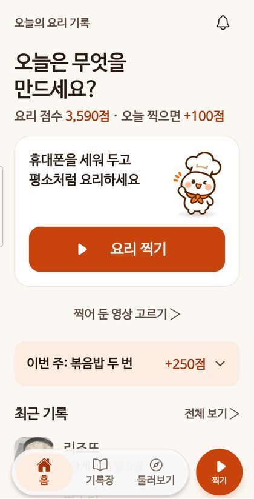
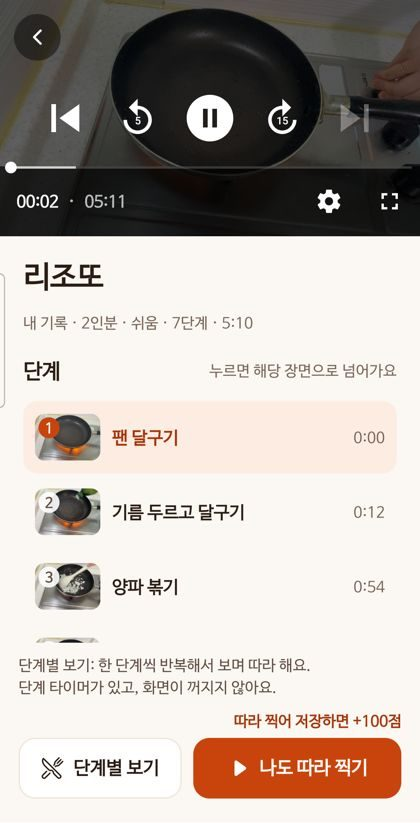
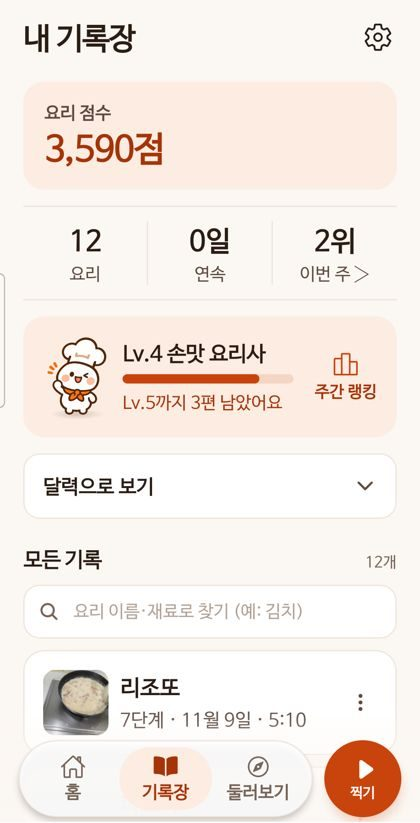
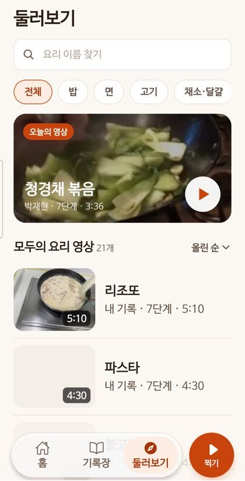
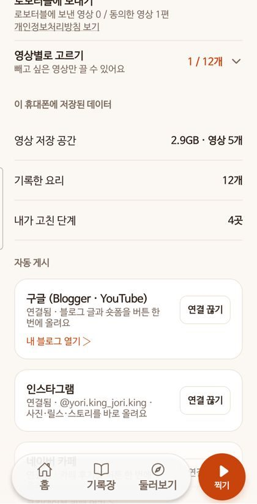
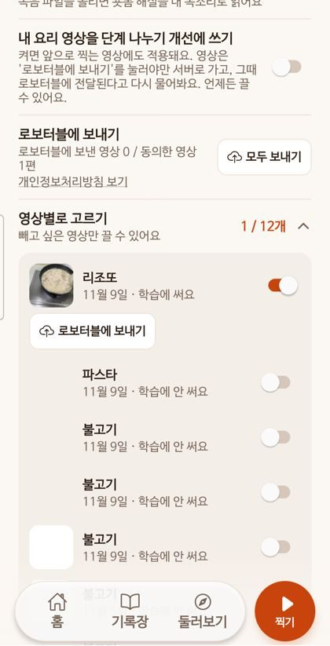
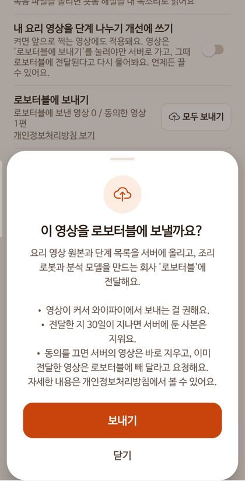

01 / 삼성청년SW·AI아카데미 15기 · 기업 연계 · AI IT 컨설팅
쿠킹테이블ROBOTABLE × SSAFY
조리 로봇 기업 로보터블은 실제 가정의 조리 단계 데이터가 필요했습니다. 저는 요구를 요건으로 정리하고, 실험으로 방법을 고르고, 앱과 서버를 구축해 영상과 라벨이 기업에 전달되는 데까지 4주 동안 수행했습니다. 사용자가 휴대폰으로 요리를 찍으면 AI가 조리 단계를 나누고, 사용자가 고친 결과가 그대로 로봇 학습용 라벨이 됩니다. 학습에 동의한 영상만 기업에 전달되도록 동의·삭제 정책도 함께 설계했습니다.
- 담당
- 요건 정의 · 실험 설계 · 앱·서버 구축과 배포 · 전체 QA · 개인정보·데이터 전달 정책 · Jira·MR 운영
- 협업
- 로보터블(요구·영상 제공) · 팀원 6명(모델·업로드 서버·리워드 담당)
- 사용 도구
- React Native(Expo) · Spring Boot · PostgreSQL · Nginx · Docker · Jira · GitLab · Gemini·Claude API · AI 코딩 에이전트
- 요구를 요건으로"조리 단계 데이터 확보"를 사용자 참여형 앱으로 구체화하고, 기획서 v0.3과 와이어프레임 v1~v3를 앱 작업 109건으로 나눴습니다.
- 근거로 방법 선택프레임 선별 전략을 시뮬레이션으로 비교한 뒤 실제 Gemini 판독 16편으로 검증하고, 서빙 모델은 품질·시간·영상당 비용으로 벤치마크해 정했습니다.
- 운영까지 책임운영 서버 배포, 로그인(JWT·PKCE), 16MB 조각 업로드, 외부 플랫폼 3곳 게시 연동, 전체 QA와 결함 수정까지 맡았습니다.
- 데이터 거버넌스개인정보처리방침·약관을 쓰고, 영상별 동의·철회 시 즉시 삭제·30일 보관·내보내기 이력을 정책으로 정했습니다.
결과
2026-11-11 Jira·GitLab 기준- Jira 담당 작업
- 174건완료 162 · 408 포인트
- GitLab 병합 MR
- 198건커밋 262 · 팀 7명 중 3위
- QA로 찾아 고친 결함
- 29건웹 3 · 앱 10 · 서버 11 · 실기기 4 · 외부 API 1
- 실제 전달 확인
- 634MB1080p 영상 1편 + 라벨 7단계
- 요건 정의기업 요구를 앱 기획서와 화면 요건으로 정리, 분석 결과 형식 v1 정의
- 실험·벤치마크프레임 선별 시뮬레이션, 실제 판독 16편 검증, 모델별 품질·시간·비용 비교
- 구축·배포앱, 서버, DB, 로그인, 조각 업로드, 외부 게시 API를 운영 서버에 배포
- 진단·QA웹 18화면·서버 API·실기기 전수 점검, 결함 29건 수정과 보고서
- 데이터 전달동의 영상 업로드, 영상+라벨 내보내기, 30일 보관·철회 삭제 정책







대표 사례 1 · 기업 미팅 시연 당일
시험에서는 통과한 업로드가, 실제 휴대폰 영상은 한 편도 받지 못했다
- 첫 판단
업로드 서버와 동의 화면이 배포됐고 자동 시험 251개가 통과했으니, 시연 준비가 끝났다고 봤습니다.
- 반대 증거
실제 휴대폰으로 5분짜리 영상을 보내 보니 "400MB 이하만 받아요(이 영상 634MB)"가 떴습니다. 한도를 고친 뒤에도 서버 로그에는 업로드 요청이 한 건도 없었습니다.
- 진짜 원인
두 가지였습니다. 서버 한도가 720p 시험 영상 기준(400MB·720p·h264)으로 정해져 있었고, 앱은 비동기 파일 읽기를 기다리지 않고 파일을 먼저 닫아 휴대폰에서는 늘 실패했습니다.
- 해결
업로드 한도를 4GB·4K·HEVC로 넓히고(DB 제약 마이그레이션 포함) 읽기 코드를 고쳐 같은 날 배포했습니다. 634MB 영상이 3분 만에 올라가
영상 .mp4+라벨 .csv+해시 목록표로 내보내졌습니다.
대표 사례 2 · 출시 전 전체 QA
금융 서비스였다면 사고였을 "출금 두 번 지급"을 출시 전에 막았다
- 증상
포인트 받기 요청이 겹치면 같은 출금이 두 번 처리될 수 있었고, 송금 중 멈춘 건은 계속 "보내는 중"으로 남았습니다.
- 원인 추적
출금 처리 작업과 관리자 승인이 같은 건을 동시에 집을 수 있었습니다. 선점이 원자적이지 않았습니다.
- 해결
DB 함수로 한 번에 선점(
claim_payout)하고, 10분 넘게 멈춘 송금은 다시 확인하도록 바꿔 시험 163개로 확인했습니다. 리워드 기능은 팀원 담당이며 저는 이 결함 수정을 맡았습니다.
대표 사례 3 · AI 비용 절감안 두 차례 실측펼쳐 보기
대표 사례 3 · 실험으로 방법 고르기
좋아 보이는 AI 비용 절감안을 두 번 실측하고, 두 번 멈췄다
- 첫 판단
시뮬레이션에서 AI(Gemini)가 읽는 사진을 22% 줄여도 정답 경계를 거의 그대로 찾았습니다. 하지만 AI가 사진을 완벽하게 읽는다는 가정이었습니다.
- 1차 실측
토큰 상한을 승인받아 실제 Gemini로 영상 16편을 판독하고, 사람이 검수한 정답 286개와 비교했습니다. 토큰은 22% 줄었지만 F1이 0.709에서 0.683으로 떨어져 제안을 철회했습니다.
- 원인 분석
놓친 경계 24개를 분류하니 54%가 사진 간격이 넓어 아예 보지 못한 구간, 38%가 AI 판독 오류였습니다.
- 2차 실측
간격은 그대로 두고 후보 주변만 줄인 개선안을 기존 방식과 같은 날 같은 설정으로 실행(호출 617회)했습니다. 토큰은 16% 줄었지만 짧은 단계 재현율이 0.851에서 0.770으로 떨어져 이 안도 기각을 제안했습니다.
- 결정
실측 없이 판독 기준을 바꾸지 않는다는 원칙을 보고서로 남겼습니다(팀 결정 전 제안).
IT 컨설팅에 적용하면
요건은 시험 데이터가 아니라 실제 고객 데이터로 검증해야 합니다. 코어뱅킹 전환 같은 프로젝트에서도 실데이터 리허설이 일정의 위험을 가장 먼저 드러낸다고 생각합니다. 구현은 제가 설계·지시하고 AI 코딩 에이전트가 작성한 코드를 시험과 실기기로 검증한 뒤 병합하는 방식으로 진행했습니다.